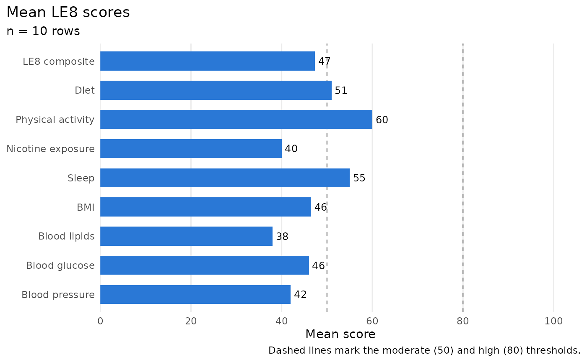
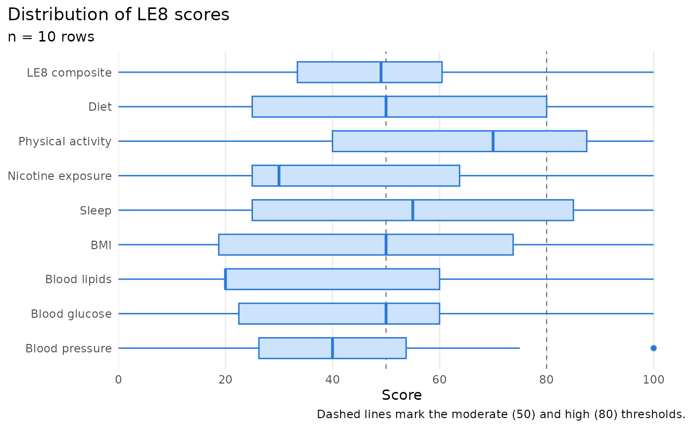
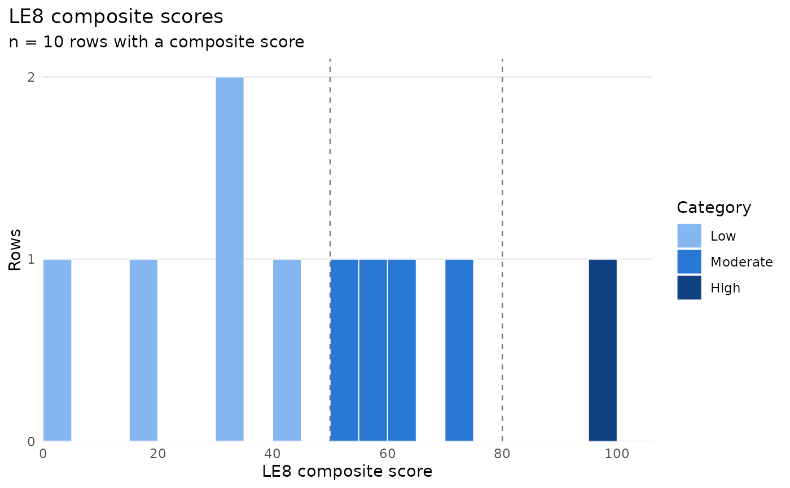
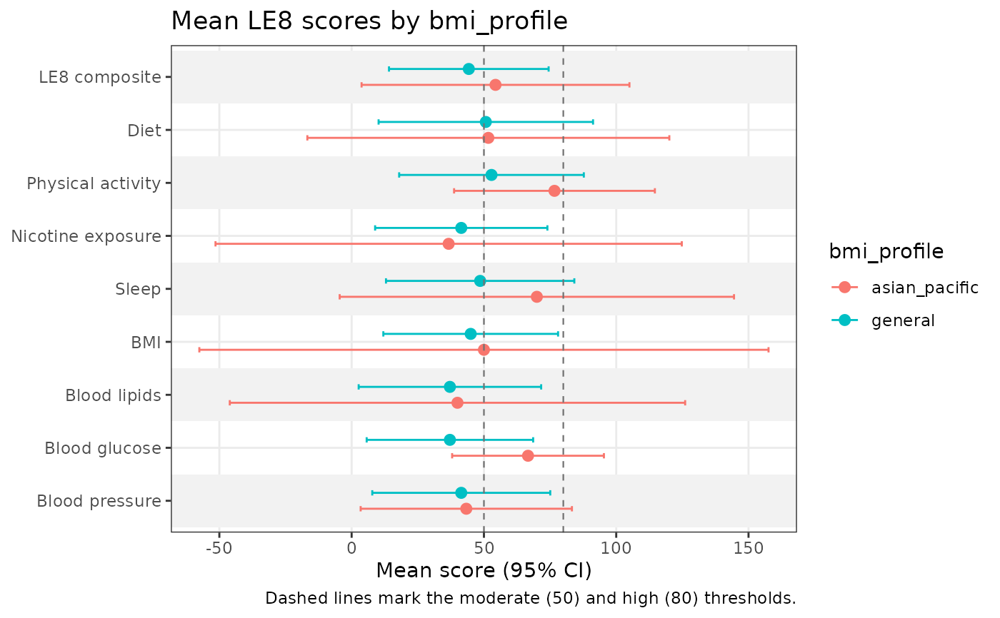

Draws the scores returned by score_le8() with ggplot2:
"components"(the default): the mean composite and component scores. With a single row, these are that person's scores."distribution": box plots of the composite and component scores."composite": a histogram of the composite score, filled by cardiovascular health category."forest": a forest plot of the mean composite and component scores with confidence intervals, optionally compared across the groups inby, drawn byggforestplotR::ggforestplot(). Requires the ggforestplotR package.
Dashed lines mark the moderate (50) and high (80) thresholds. Missing scores are left out. The result is a ggplot object, so it can be modified with further ggplot2 layers, scales, and themes. For other designs, start from tidy().
Arguments
- x
An
essential8_scoresobject returned byscore_le8().- type
The plot to draw:
"components","distribution","composite", or"forest".- by
For
type = "forest", an optional column name inxwhose groups are compared, such as"sex". Defaults to the grouping column of a tibble grouped by one column, and to none otherwise.- ...
For
type = "forest", named arguments passed toggforestplotR::ggforestplot(). Must be empty for other types.
Forest plots
For type = "forest", each row is a measure: the mean score and its
t-based confidence interval, from the rows with that score available.
Measures with fewer than two available scores in a group have no interval
and are left out. With by, rows with a missing group are left out, and
groups are ordered by factor level (or sorted, for other columns).
Imputed scores
For scores from score_le8_imputed(), "components" shows pooled means
and "forest" pooled means with Rubin's-rules confidence intervals.
"distribution" shows the stacked imputed data sets, and "composite"
weights each row by \(1/m\) so the bars count participants.
Arguments in ... are passed to ggforestplotR::ggforestplot(), so its
styling options work as usual, for example striped_rows = TRUE,
point_size, dodge_width, ref_line, or sort_terms. conf.level
(default 0.95) sets the interval level as well as the label. The data
mapping arguments (data, term, estimate, conf.low, conf.high,
label, group, and n) are set by plot(). Composition helpers such as
ggforestplotR::add_forest_table() can be added to the result.
Examples
adults <- read.csv(system.file(
"extdata", "le8-adult-example.csv", package = "essential8"
))
adults <- adults[!startsWith(names(adults), "expected_")]
scores <- score_le8(adults)
plot(scores)

plot(scores, type = "distribution")

plot(scores, type = "composite")

# Compare groups in a forest plot, passing styling to ggforestplotR.
plot(scores, type = "forest", by = "bmi_profile", striped_rows = TRUE)
